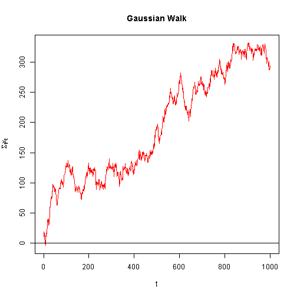
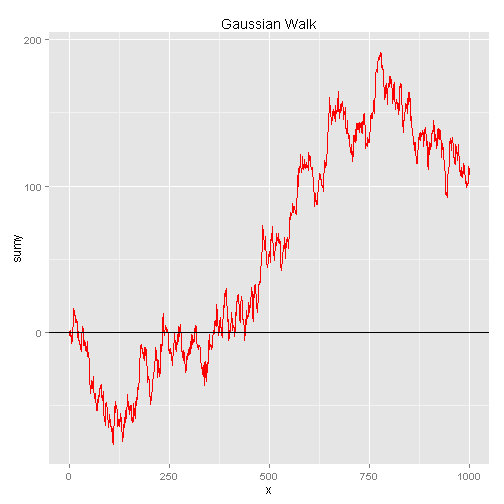
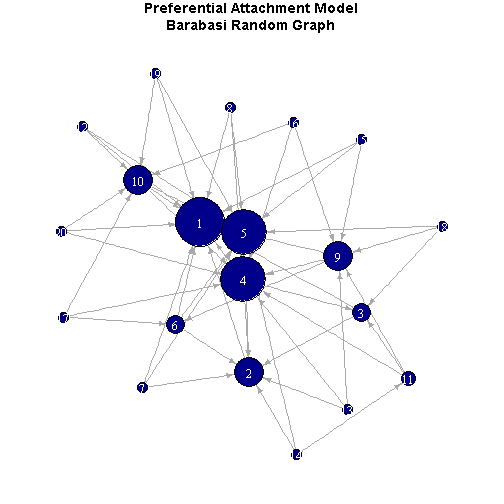

Using slidify in R
x <- rnorm(1000,0,5)
plot(cumsum(x),main="Gaussian Walk",col='red',
ylab=expression(Sigma[t]*x[t]),
xlab='t',type='l')
abline(h=0,col='black')


adft <- adf.test(x = cumsum(x),alternative = 'stationary')
print(adft)
##
## Augmented Dickey-Fuller Test
##
## data: cumsum(x)
## Dickey-Fuller = -3.02, Lag order = 9, p-value = 0.1465
## alternative hypothesis: stationary
g <- barabasi.game(n = 20, power = 1.1, m = 3, directed = T)
par(mar=c(.5,.5,2.2,.5))
plot.igraph(g, layout=layout.fruchterman.reingold,
vertex.size=degree(g)*2,edge.arrow.size=.5,
edge.color='dark gray',vertex.color='dark blue',
vertex.label.color='white',
main="Preferential Attachment Model\nBarabasi Random Graph")

Use a spacebar or arrow keys to navigate